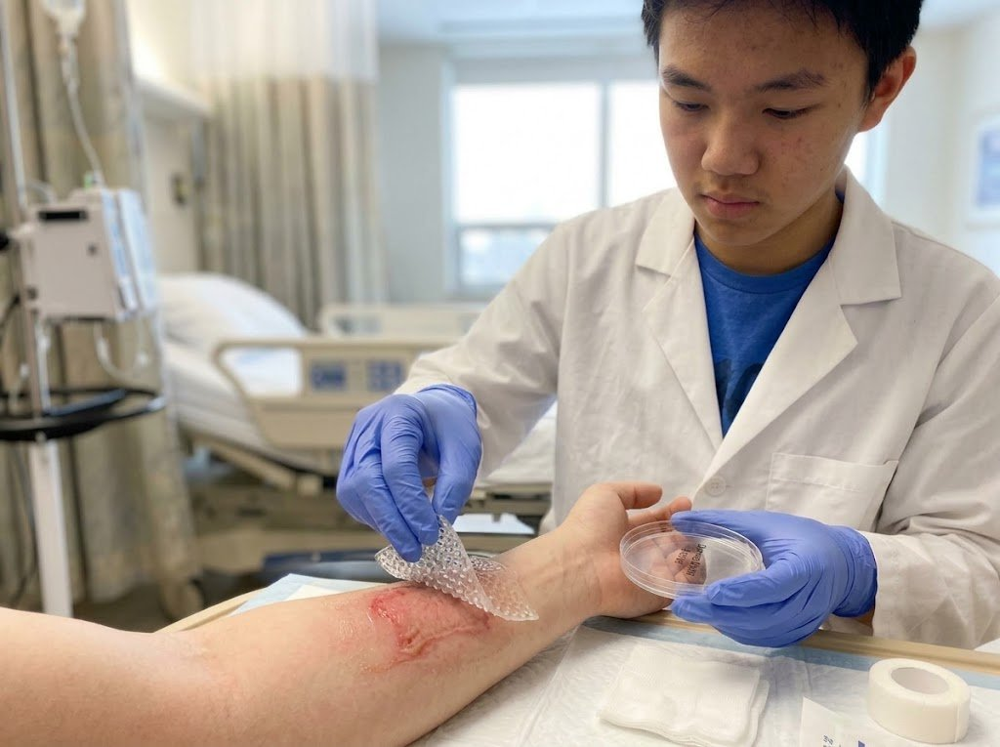

A DermaNova é uma startup de biotecnologia que apresenta a DermaSkin: uma matriz regenerativa personalizada para lesões profundas de pele, agora disponível para os primeiros centros parceiros.

A regeneração da pele após lesões profundas — queimaduras, acidentes, cirurgias extensas e feridas crônicas — é um desafio: o organismo consegue fechar a ferida, mas o tecido formado pode trazer cicatriz, redução de elasticidade, perda de sensibilidade e ausência de estruturas da pele saudável.
Diante desse problema, a DermaNova apresenta a DermaSkin: uma matriz regenerativa personalizada formada por ácido hialurônico, células cultivadas em laboratório, moléculas bioativas e porosidade controlada — pensada para dar suporte às células durante a regeneração.
A proposta integra quatro áreas do conhecimento: a Biologia estuda células e técnicas de engenharia genética; a Química participa da composição, estrutura e degradação da matriz; a Física contribui com o controle de equipamentos e fenômenos eletromagnéticos; e a Matemática auxilia na análise do crescimento celular, do tempo de cultivo e das possibilidades experimentais.